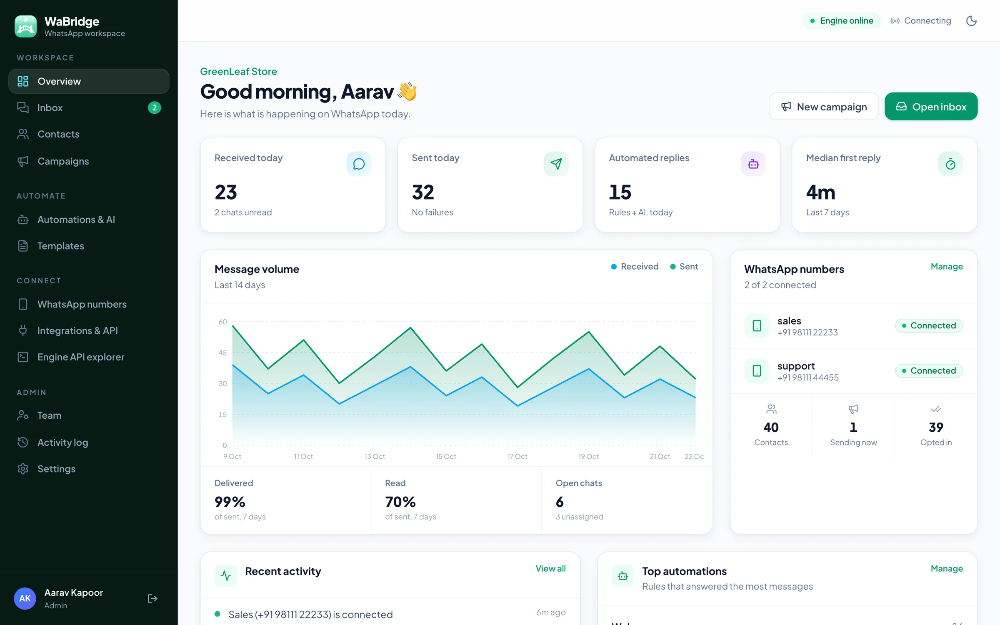
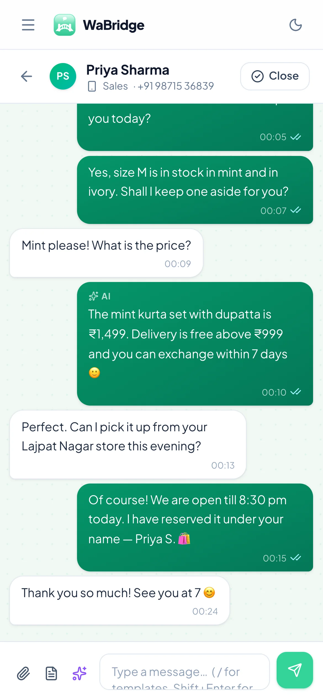
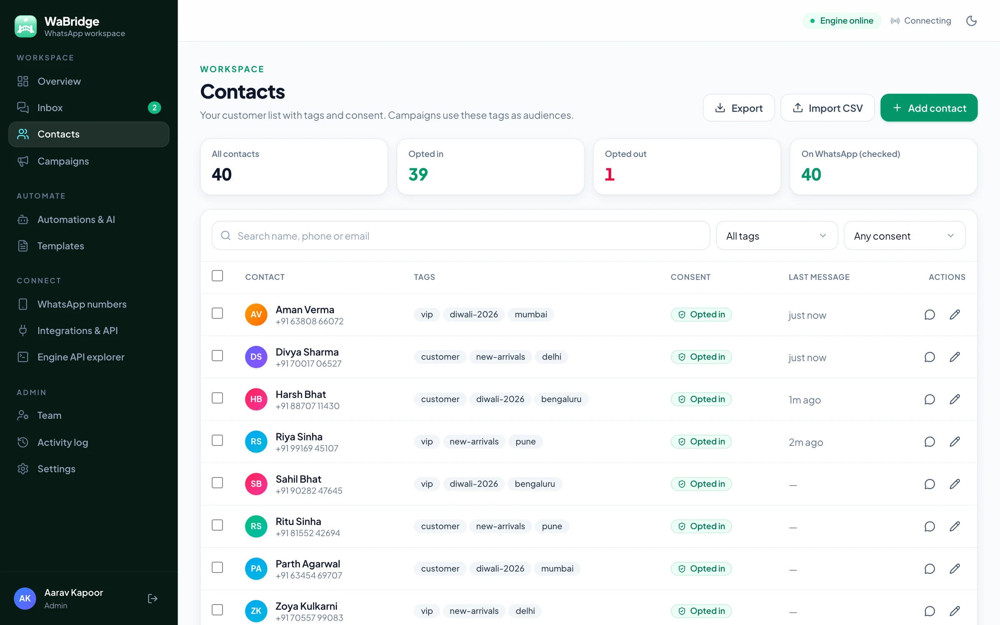
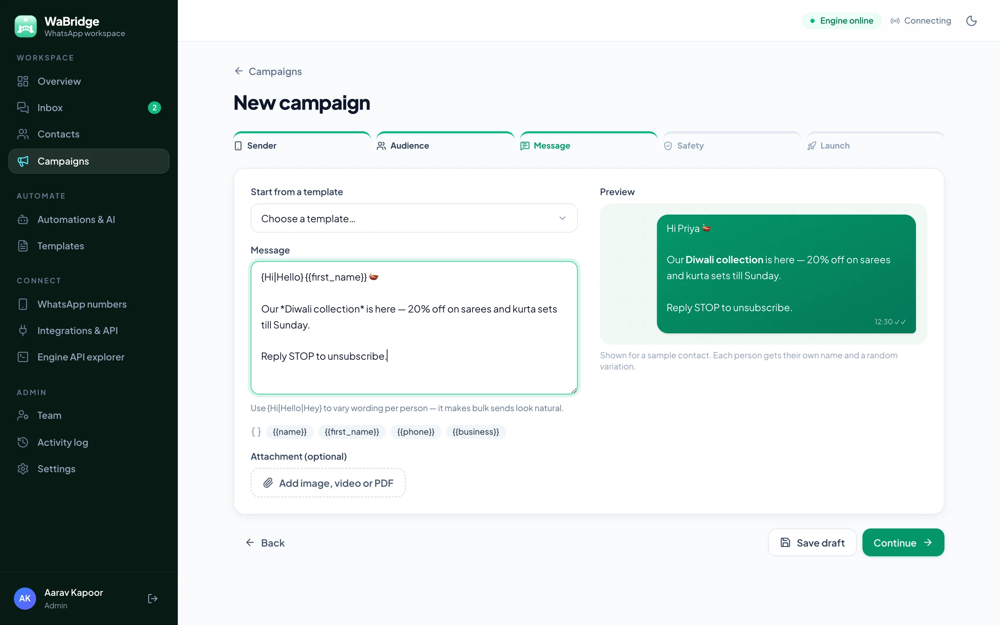
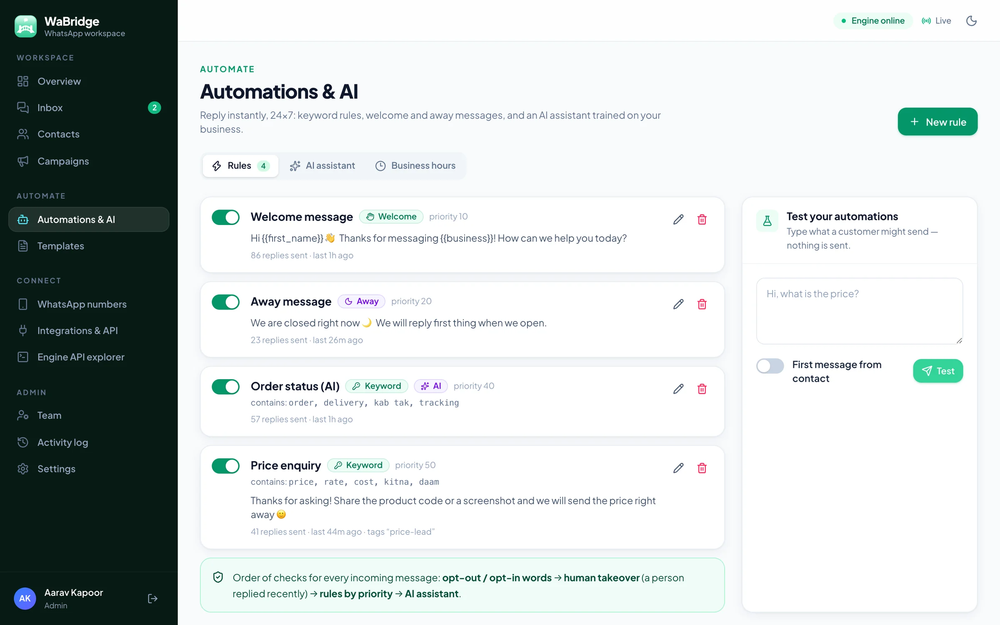
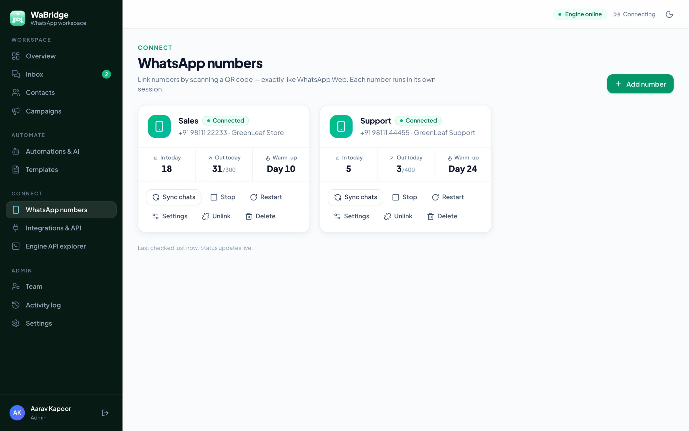

Signed everything
Engine events, outgoing webhooks and Meta callbacks are verified with HMAC signatures; forged requests are rejected.
One workspace for conversations, customers, broadcasts and automation — with the safety habits that keep a business number in good standing.

Every message from every linked number appears in a single live inbox — no refreshing, no shared phone.

Reply from the shop floor or a site visit. The dashboard adapts to small screens, so the team can keep working away from the desk.

Everyone who messages you is saved automatically. Bring the rest in from a spreadsheet in a minute.

A five-step wizard — sender, audience, message, safety, launch — with a live preview of exactly what each person will see.

Rules run in a clear order for every incoming message, so you always know why a reply was sent.

Add your prices, timings, delivery areas and policies in plain text. The assistant replies only from what you wrote — and says a teammate will follow up when it does not know.
Example conversation
Sales, support and each store location can run on their own number, all inside one workspace.

Send OTPs, order confirmations and invoices from your website, billing software or n8n — and receive every incoming message as a signed webhook.
curl -X POST https://your-server/api/v1/messages \
-H "X-WaBridge-Key: wb_live_••••••" \
-H "Content-Type: application/json" \
-d '{
"to": "919876543210",
"text": "Your order #4521 has shipped 🚚"
}'
# → 201 { "id": 812, "status": "sent" }WaBridge is software you run yourself. There is no WaBridge cloud that sees your chats.
Engine events, outgoing webhooks and Meta callbacks are verified with HMAC signatures; forged requests are rejected.
Admin and agent roles, scrypt-hashed passwords and HTTP-only session cookies. API keys are stored hashed.
The dashboard listens only on your own computer unless you choose to expose it, ideally behind HTTPS.
Already have a Meta Business account? Add your Phone Number ID, WABA ID and a permanent token to run approved-template campaigns at scale and receive messages through Meta's webhook — in the same inbox as your QR-linked numbers.
Install it, link a test number and try every feature in an afternoon.